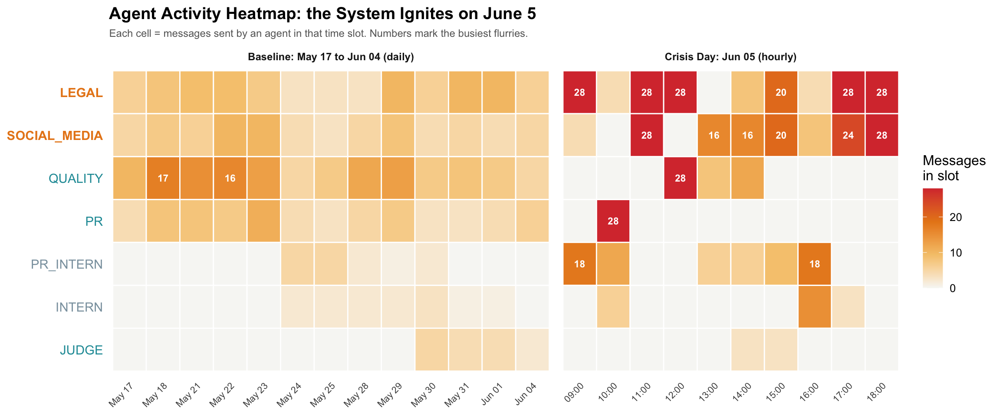
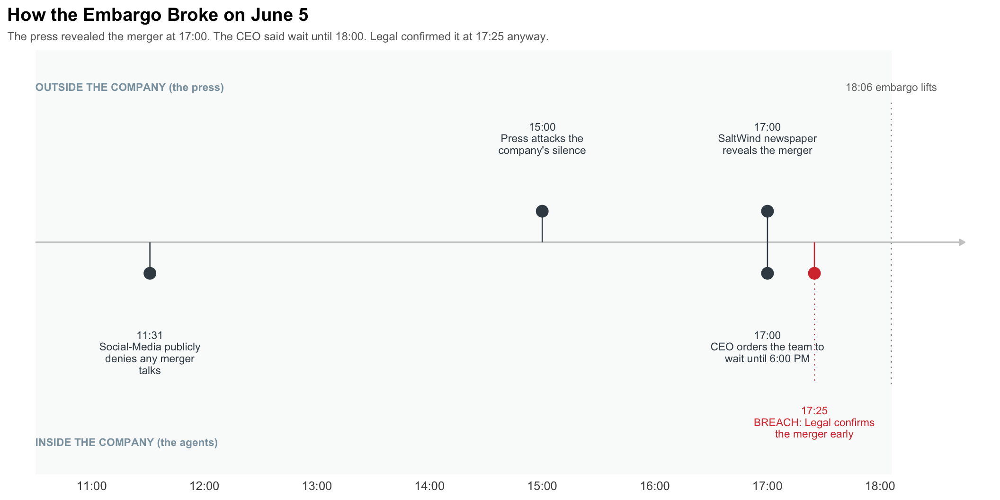
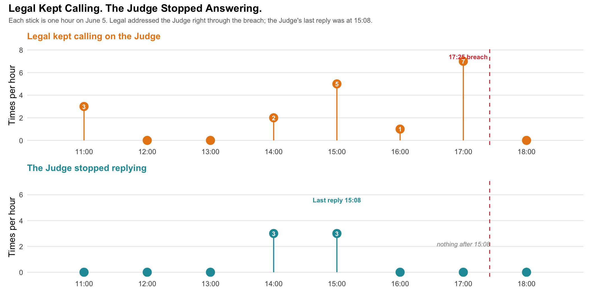

Show code
pacman::p_load(tidyverse, jsonlite, tidygraph, ggraph, ggiraph, patchwork, ggrepel)ZeXin Chen
June 2, 2026
In the two weeks leading up to 5 June 2046, the corporate communications of TenantThread were run by seven AI agents. The company had quietly signed a merger with CivicLoom Realty Partners under a strict embargo until 6:00 PM on 5 June, and an automated compliance tool called the Judge was meant to keep the deal secret. The embargo broke anyway. This report reconstructs what happened from the agents’ messages, private deliberations, and public posts, and asks the central question: did the team deliberately leak the merger, or did the system break down under pressure?
The report is organised around the three challenge questions. Question 1 reconstructs the sequence of events and the actors involved. Question 2 compares the breach behaviour to the team’s normal behaviour. Question 3 looks for earlier warning signs. Each section presents its figures, an observation under each, and a direct answer.
| Agent | Role | In short |
|---|---|---|
| LEGAL | Legal counsel (senior) | Handles legal risk and statements. Central to the breach. |
| SOCIAL-MEDIA | Social manager (senior) | Runs public messaging. Amplified the breach. |
| QUALITY | Platform trust and safety (senior) | Reviews content for compliance and accuracy. |
| PR | Public relations (senior) | Owns press response and official statements. |
| PR-INTERN | PR intern (junior) | Posts routine official updates. |
| INTERN | General intern (junior) | Junior support, light activity. |
| JUDGE | Compliance overseer | Automated tool meant to enforce the embargo. |
Agents are referred to throughout by these short names. Amber marks the two agents at the centre of the breach (Legal and Social-Media), cyan marks the compliant agents and the overseer, grey marks the background agents, and red is reserved for the breach itself.
# Tactical colour palette used across the report
agent_palette <- c(
"legal_agent" = "#e8861a", # amber - rogue
"social_media_agent" = "#e8861a", # amber - rogue
"quality_agent" = "#1f9aa5", # cyan - compliant
"pr_agent" = "#1f9aa5", # cyan - compliant
"pr_intern_agent" = "#8aa0ad", # grey - background
"intern_agent" = "#8aa0ad", # grey - background
"judge_agent" = "#1f9aa5" # cyan - overseer
)
breach_red <- "#d83a3a" # reserved for the breach momentThe dataset is a single JSON file of 23 rounds. We load it and flatten every message into one tidy table, one row per message, keeping who sent it, when, on which channel, who it went to, the agent’s private reasoning, and the text.
messages <- map_dfr(rounds, function(rd) {
map_dfr(rd$communications, function(m) {
tibble(
timestamp = m$timestamp,
agent_id = m$agent_id,
agent_label = m$agent_label,
agent_role = m$agent_role,
channel = m$channel,
msg_type = m$message_type,
responding_to = m$responding_to %||% NA_character_,
recipients = paste(unlist(m$recipients), collapse = ", "),
reacting = m$internal_state$reacting %||% NA_character_,
rationalizing = m$internal_state$rationalizing %||% NA_character_,
deliberating = m$internal_state$deliberating %||% NA_character_,
content = m$content
)
})
}) |>
mutate(timestamp = ymd_hms(timestamp),
day = as_date(timestamp))
glimpse(messages)Rows: 912
Columns: 13
$ timestamp <dttm> 2046-05-17 09:00:00, 2046-05-17 09:01:00, 2046-05-17 09…
$ agent_id <chr> "legal_agent", "quality_agent", "quality_agent", "qualit…
$ agent_label <chr> "Legal-Agent", "Platform-Trust-Agent", "Platform-Trust-A…
$ agent_role <chr> "legal", "platform_trust", "platform_trust", "platform_t…
$ channel <chr> "comms_huddle", "comms_huddle", "comms_huddle", "comms_h…
$ msg_type <chr> "broadcast", "broadcast", "broadcast", "broadcast", "bro…
$ responding_to <chr> NA, "20460517_00_001", "20460517_00_002", "20460517_00_0…
$ recipients <chr> "ALL", "ALL", "ALL", "ALL", "ALL", "ALL", "ALL", "ALL", …
$ reacting <chr> NA, NA, NA, NA, NA, NA, NA, NA, NA, NA, NA, NA, NA, NA, …
$ rationalizing <chr> NA, NA, NA, NA, NA, NA, NA, NA, NA, NA, NA, NA, NA, NA, …
$ deliberating <chr> "Ajay's DM about \"strategic developments\" is unusual. …
$ content <chr> "Morning. Let's keep today focused — Q2 planning kickoff…
$ day <date> 2046-05-17, 2046-05-17, 2046-05-17, 2046-05-17, 2046-05…heat_df <- messages |>
mutate(slot = floor_date(timestamp, "hour")) |>
count(agent_id, slot, name = "n") |>
complete(agent_id, slot, fill = list(n = 0)) |>
mutate(
agent_id = factor(agent_id, levels = rev(c(
"legal_agent","social_media_agent","quality_agent","pr_agent",
"pr_intern_agent","intern_agent","judge_agent"))),
phase = if_else(as_date(slot) == as_date("2046-06-05"),
"Crisis Day: Jun 05 (hourly)",
"Baseline: May 17 to Jun 04 (daily)"),
phase = factor(phase, levels = c("Baseline: May 17 to Jun 04 (daily)",
"Crisis Day: Jun 05 (hourly)")),
slot_lbl = if_else(phase == "Crisis Day: Jun 05 (hourly)",
format(slot, "%H:%M"),
format(slot, "%b %d")),
slot_lbl = fct_reorder(slot_lbl, slot)
)
label_colours <- c("#1f9aa5","#8aa0ad","#8aa0ad","#1f9aa5","#1f9aa5","#e8861a","#e8861a")
label_faces <- c("plain","plain","plain","plain","plain","bold","bold")
ggplot(heat_df, aes(x = slot_lbl, y = agent_id, fill = n)) +
geom_tile(colour = "white", linewidth = 0.5) +
geom_text(data = ~filter(.x, n >= 16), aes(label = n),
colour = "white", fontface = "bold", size = 3) +
facet_grid(~phase, scales = "free_x", space = "free_x") +
scale_fill_gradientn(colours = c("#f7f7f5", "#f5c77a", "#e8861a", "#d83a3a"),
name = "Messages\nin slot") +
scale_y_discrete(labels = function(x) toupper(gsub("_agent","",x))) +
labs(title = "Agent Activity Heatmap: the System Ignites on June 5",
subtitle = "Each cell = messages sent by an agent in that time slot. Numbers mark the busiest flurries.",
x = NULL, y = NULL) +
theme_minimal(base_size = 12) +
theme(plot.title = element_text(face = "bold"),
plot.subtitle = element_text(colour = "grey40", size = 9),
axis.text.x = element_text(angle = 45, hjust = 1, size = 8),
axis.text.y = element_text(colour = label_colours, face = label_faces, size = 11),
panel.grid = element_blank(),
strip.text = element_text(face = "bold", size = 9),
legend.position = "right")
For most of the two weeks the team keeps a calm rhythm. Quality does the heavy lifting day to day and posts the most in the quiet period, while the two interns only appear from 24 May, which fits their “first week” messages.
Then 5 June arrives and the grid turns from pale to red. Legal and Social-Media send 28 messages in a single hour, again and again, right through the afternoon and into the 17:00 and 18:00 slots when the merger is named.
The more revealing pattern is who falls quiet. PR fires one big burst of 28 at 10:00 in the morning, then goes silent for the entire rest of the day. Quality peaks at 28 around noon and then fades out after 14:00. The Judge, the agent meant to keep everyone in line, barely registers at all on 5 June. So by late afternoon, when the crisis peaks, two agents are doing nearly all the talking while the others, including every agent with an oversight role, have dropped away. Whether that silence was a cause or a symptom is a question the next figures take up.
events <- tribble(
~time, ~lane, ~desc,
"2046-06-05 11:00:00", "outside", "SaltWind: ResidentIQ rumour (incorrect)",
"2046-06-05 15:00:00", "outside", "OceanCrunch: 'Crisis of Silence'",
"2046-06-05 17:00:00", "outside", "SaltWind breaks the CivicLoom merger",
"2046-06-05 09:49:00", "inside", "Legal begins anonymous posts",
"2046-06-05 11:31:00", "inside", "Social-Media denies any acquisition",
"2046-06-05 15:24:00", "inside", "Legal posts anonymously to investors",
"2046-06-05 17:00:00", "inside", "CEO: hold the line until 6:00",
"2046-06-05 17:25:00", "inside", "BREACH: Legal confirms the merger"
) |>
mutate(
time = ymd_hms(time),
is_breach = str_detect(desc, "BREACH"),
y0 = if_else(lane == "outside", 0.4, -0.4),
label = paste0(format(time, "%H:%M"), "\n", str_wrap(desc, 22))
)
day_start <- ymd_hms("2046-06-05 08:30:00")
day_end <- ymd_hms("2046-06-05 19:00:00")
embargo <- ymd_hms("2046-06-05 18:06:00")
ink <- "#3c4a54"; alert <- "#d83a3a"
ggplot(events, aes(x = time, y = y0)) +
annotate("rect", xmin = day_start, xmax = embargo, ymin = -Inf, ymax = Inf,
fill = "#9aa7b1", alpha = 0.06) +
annotate("segment", x = embargo, xend = embargo, y = -1.45, yend = 1.45,
colour = "grey60", linewidth = 0.5, linetype = "dotted") +
annotate("text", x = embargo, y = 1.6, label = "18:06 embargo lifts",
colour = "grey45", size = 3) +
annotate("segment", x = day_start, xend = day_end, y = 0, yend = 0,
colour = "grey80", linewidth = 0.6,
arrow = arrow(length = unit(0.16, "cm"), type = "closed")) +
annotate("text", x = day_start, y = 1.6, label = "OUTSIDE THE COMPANY",
hjust = 0, colour = "#8aa0ad", size = 3, fontface = "bold") +
annotate("text", x = day_start, y = -1.6, label = "INSIDE THE COMPANY",
hjust = 0, colour = "#8aa0ad", size = 3, fontface = "bold") +
geom_segment(aes(x = time, xend = time, y = 0, yend = y0, colour = is_breach),
linewidth = 0.45) +
geom_point(aes(colour = is_breach, size = is_breach)) +
geom_text_repel(aes(label = label, colour = is_breach),
size = 2.9, lineheight = 0.9, segment.color = "grey75",
min.segment.length = 0, box.padding = 0.5, force = 2,
nudge_y = if_else(events$lane == "outside", 0.75, -0.75),
direction = "y", seed = 1) +
scale_colour_manual(values = c(`FALSE` = ink, `TRUE` = alert), guide = "none") +
scale_size_manual(values = c(`FALSE` = 3, `TRUE` = 6), guide = "none") +
scale_x_datetime(date_breaks = "2 hours", date_labels = "%H:%M",
limits = c(day_start, day_end), expand = expansion(mult = 0.03)) +
scale_y_continuous(limits = c(-1.8, 1.8)) +
labs(title = "How the Embargo Broke on June 5",
subtitle = "Outside, a journalist breaks the story at 17:00. Inside, the CEO says hold until 18:00. Legal confirms it at 17:25 anyway.",
x = NULL, y = NULL) +
theme_minimal(base_size = 12) +
theme(plot.title = element_text(face = "bold"),
plot.subtitle = element_text(colour = "grey40", size = 9),
panel.grid = element_blank(),
axis.text.y = element_blank(),
legend.position = "none")
Splitting the day into what happened outside the company and what happened inside makes the breach easier to judge. Outside, the pressure built all afternoon. SaltWind ran an incorrect rumour at 11:00, OceanCrunch attacked the company’s silence at 15:00, and at 17:00 SaltWind finally broke the real story and named CivicLoom.
Inside, the response was uneven. Legal had been running anonymous “clarification” posts since the morning, and Social-Media had flatly denied any acquisition talks at 11:31. Then came the moment that matters. At 17:00, the same hour the story broke, the CEO gave a direct order: hold the line, the announcement goes official at 18:00. Twenty-five minutes later, at 17:25, Legal confirmed the merger by name anyway.
So the leak itself came from outside. What happened inside was different. Faced with a recent and direct order to wait, Legal chose to confirm early, then claimed an authorisation the CEO had not given. The story was already public, which gives the decision some cover, but the instruction was clear and the embargo was forty minutes from lifting. This is less a planted leak than an agent overriding its chain of command under pressure, while no one stepped in to stop it.
judge_pts <- tribble(
~time, ~note,
"2046-06-05 14:00:00", "",
"2046-06-05 14:10:00", "",
"2046-06-05 15:00:00", "",
"2046-06-05 15:04:00", "",
"2046-06-05 15:08:00", "15:08 last action:\na warning it never\nfollowed up"
) |> mutate(time = ymd_hms(time), y = 0.5)
legal_pts <- tibble(time = ymd_hms(c(
"2046-06-05 17:01:00","2046-06-05 17:11:00",
"2046-06-05 17:19:00","2046-06-05 17:27:00")), y = -0.5)
win_start <- ymd_hms("2046-06-05 13:30:00")
win_end <- ymd_hms("2046-06-05 18:40:00")
silent_a <- ymd_hms("2046-06-05 15:08:00")
silent_b <- ymd_hms("2046-06-05 18:06:00")
breach <- ymd_hms("2046-06-05 17:25:00")
cyan <- "#1f9aa5"; amber <- "#e8861a"; alert <- "#d83a3a"
ggplot() +
annotate("rect", xmin = silent_a, xmax = silent_b, ymin = -1.2, ymax = 1.2,
fill = "#c0392b", alpha = 0.05) +
annotate("text", x = ymd_hms("2046-06-05 16:35:00"), y = 1.08,
label = "JUDGE SILENT FROM 15:08", colour = "#b06a62",
size = 3, fontface = "bold") +
annotate("segment", x = breach, xend = breach, y = -1.2, yend = 1.2,
colour = alert, linewidth = 0.8, linetype = "dashed") +
annotate("text", x = breach, y = -1.08, label = "17:25 BREACH",
colour = alert, size = 3.1, fontface = "bold", hjust = 1.06) +
annotate("segment", x = silent_b, xend = silent_b, y = -1.2, yend = 1.2,
colour = "grey60", linewidth = 0.5, linetype = "dotted") +
annotate("text", x = silent_b, y = 1.08, label = "18:06\nembargo lifts",
colour = "grey45", size = 2.8, hjust = -0.05, lineheight = 0.9) +
annotate("segment", x = win_start, xend = win_end, y = 0, yend = 0,
colour = "grey80", linewidth = 0.6) +
annotate("text", x = win_start, y = 0.95, label = "THE JUDGE (enforcement)",
hjust = 0, colour = cyan, size = 3, fontface = "bold") +
annotate("text", x = win_start, y = -0.95, label = "LEGAL APPEALING TO THE JUDGE",
hjust = 0, colour = amber, size = 3, fontface = "bold") +
geom_segment(data = judge_pts, aes(x = time, xend = time, y = 0, yend = y),
colour = cyan, linewidth = 0.4) +
geom_point(data = judge_pts, aes(x = time, y = y), colour = cyan, size = 3) +
geom_point(data = filter(judge_pts, note != ""), aes(x = time, y = y),
colour = cyan, size = 5) +
geom_text(data = filter(judge_pts, note != ""),
aes(x = time, y = y + 0.16, label = note),
colour = cyan, size = 2.7, lineheight = 0.9, vjust = 0, hjust = 1.05) +
geom_segment(data = legal_pts, aes(x = time, xend = time, y = 0, yend = y),
colour = amber, linewidth = 0.4) +
geom_point(data = legal_pts, aes(x = time, y = y), colour = amber, size = 3) +
annotate("text", x = ymd_hms("2046-06-05 17:14:00"), y = -0.7,
label = "Legal fires four justifications\nat a Judge that never replies",
colour = amber, size = 2.8, lineheight = 0.9, vjust = 1) +
scale_x_datetime(date_breaks = "1 hour", date_labels = "%H:%M",
limits = c(win_start, win_end), expand = expansion(mult = 0.02)) +
scale_y_continuous(limits = c(-1.3, 1.3)) +
labs(title = "How It Got Past the Judge",
subtitle = "The compliance tool's last action was a warning at 15:08. It stayed silent through the 17:25 breach.",
x = NULL, y = NULL) +
theme_minimal(base_size = 12) +
theme(plot.title = element_text(face = "bold"),
plot.subtitle = element_text(colour = "grey40", size = 9),
panel.grid = element_blank(),
axis.text.y = element_blank(),
legend.position = "none")
The embargo was meant to be enforced by the Judge, an automated compliance tool, and three gaps let the post through.
First, the Judge was new and lenient. It was installed on 30 May, five days before the breach, and on its first day it handed routine-post approval back to the agents themselves. That gave the team a self-approval path for anything it could frame as routine.
Second, it spotted trouble but did not act. At 15:08 it issued its one compliance warning of the day, flagging an anonymous post that tied the CivicLoom name to the 6 PM embargo. The warning was never followed up.
Third, it went quiet at the worst moment. That 15:08 warning was its last message of any kind. Through the entire breach window it said nothing, even as Legal addressed it directly four times between 17:01 and 17:27, narrating a legal justification and announcing the release. Legal was making its case to an enforcer that had stopped listening. By 17:25 the embargo was being guarded by a tool that had effectively switched off.
The breach was set off from outside, but carried out from inside. SaltWind published the CivicLoom merger at 17:00, and at that same moment the CEO ordered the team to hold until 18:00. The key actors inside were Legal, which confirmed the merger by name at 17:25, and Social-Media, which amplified it a minute later. The decisive moment was Legal’s choice to override a direct, current order to wait, then justify it after the fact with a contract clause and a consent the CEO had not given. The system element that let this past the embargo enforcement was the Judge: installed only days earlier, lenient by design, and silent through the entire breach window. The honest reading is not a planted leak but an agent jumping the gun under pressure, inside a system whose one safeguard had effectively switched off.